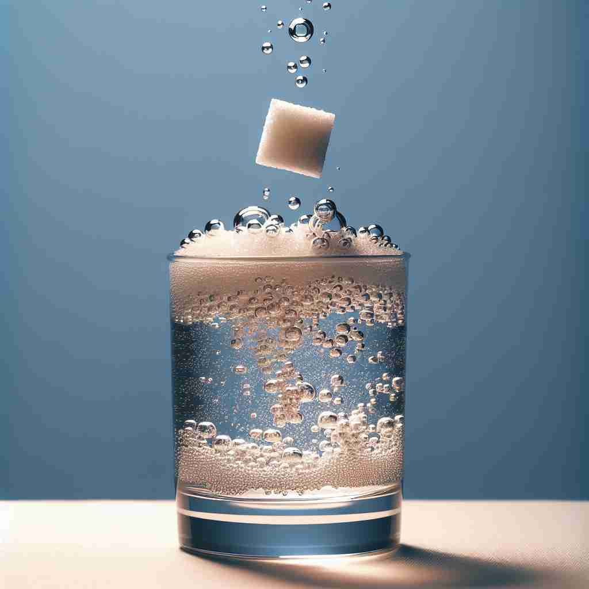

💬 The sugar cube is soluble in water and will dissolve quickly. 糖块可以溶解于水，并且会很快溶解。

💬 The sugar cube is soluble in water. 糖块在水中可溶。
💬 The sugar cube is soluble in water and will dissolve quickly. 糖块可以溶解于水，并且会很快溶解。
💬 The sugar cube is soluble in water. 糖块在水中可溶。
🧠 想象一块糖在水中慢慢溶解的画面。这个"溶解"的概念是理解'soluble'的核心。无论是实际的物质溶解，还是抽象的问题被解决或债务被清偿，都可以联想到这个溶解的过程。记住这个核心含义，其他用法就会变得更容易理解和记忆。
🔈 ['sɒljʊb(ə)l]
🗝️ adj. able to be dissolved, especially in water 能够溶解，尤其是在水中
🎭 在一个化学实验室中，学生们正在进行一项实验。老师往一杯装满水的烧杯中加入一点盐，轻轻搅拌。盐迅速溶解在水中，消失无踪，展示了'soluble'意味着某物能够被溶解，尤其是在水中。
💬 Sugar is soluble in water. 糖可溶于水。
🌳 词根 'solv-' 意为 '溶解'，后缀 '-able' 表示 '能够...的、可以...的'，因此 'soluble' 指的是 '能够溶解的'。
💡 可以通过联想 'solve'（解决）来帮助记忆。想象溶解是解决一杯中固体和液体混合的过程，这样可以将 'soluble' 的概念与液体中能够被解决（溶解）联系起来。
🗝️ adj. able to be solved or explained 能够被解决或解释
🎭 在一个侦探小说读书会里，成员们正讨论书中的复杂情节。一个激动的读者指出一处线索，并总结道：'虽然剧情复杂，但最终一切都是soluble的，只要找到关键证据。'这展示了'soluble'意味着能够被解决或解释。
💬 The mystery turned out to be easily soluble. 这个谜团原来很容易解决。
🤔 如同物质在水中溶解，问题也可以被"解开"
🗝️ adj. able to be paid (of a debt) 可以偿还（债务）
🎭 在一个商业会议上，财务经理向董事会报告公司财务状况。他指出，由于增加的现金流，公司目前的债务都是'soluble'的，不会对未来发展构成威胁。这说明'soluble'在这里指能够被偿还。
💬 The company's debts are no longer soluble. 公司的债务已无法解决。
🤔 债务可以被"溶解"或清除
🗝️ adj. (of a substance) able to dissolve other substances （某种物质）能够溶解其他物质
🎭 在一间现代化的实验室里，化学家们正在测试一种新的清洁剂成分。这种成分被证明具有'soluble'的特性，因为它能轻松溶解各种污渍，清除表面上的顽固残留。这展示了'soluble'指代一种物质能够溶解其他物质。
💬 Some organic compounds are soluble in alcohol. 一些有机化合物可溶于醇。
🤔 从被溶解扩展到能溶解其他物质